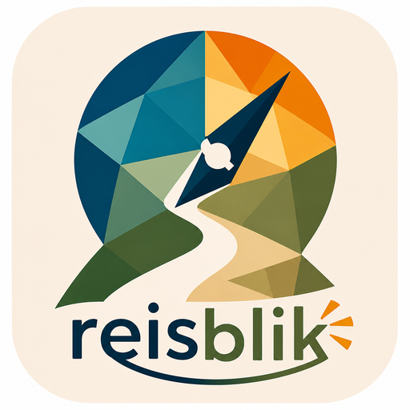

Onderhoudsfuncties
Testfuncties

De Agenda wordt de plek voor toekomstige activiteiten en evenementen. De vormgeving werken we later verder uit.
Reisblik beoordeelt evenementen niet alleen op naam of categorie, maar onderzoekt ook wat er werkelijk te beleven is: makers/contact, verhaal en uitleg, kleinschaligheid, lokale/authentieke organisatie, bijzondere locatie, natuur/wandelen, vrijheid, onverwachte elementen, sociale situatie, onafhankelijke bezoekerservaringen, kwaliteit, reiswaardigheid en knutterigheid.
Maak een backup van je persoonlijke Reisblik-gegevens.
Kies een eerder gemaakte Reisblik-contentbackup. Alleen persoonlijke lokale gegevens uit de backup worden teruggezet.
Let op: hiermee wordt de volledige localStorage van Reisblik op dit apparaat gewist.
Dit verwijdert onder andere Bezocht, Extra informatie, persoonlijke notities, eigen locaties en opgeslagen Agenda-evenementen. De vaste HTML-content, agenda.json en de applicatiebestanden worden niet verwijderd.
Voeg een eigen locatie toe. Het adres wordt omgezet naar GPS-coördinaten.
Reisblik helpt je interessante plaatsen en evenementen te ontdekken, informatie vast te leggen en je eigen reiservaringen lokaal te bewaren.
Toont de locaties van de geselecteerde categorieën op de kaart en in de lijst. De kaart gebruikt de beschikbare GPS-coördinaten.
Voeg zelf een locatie toe. Je kunt een naam, adres, type, omschrijving, foto en eigen verhaal bewaren. Het adres kan naar GPS worden omgezet of je kunt je huidige/testlocatie gebruiken.
Vraagt de browser om je actuele GPS-positie en gebruikt die om je positie op de kaart te tonen en afstanden tot locaties te berekenen.
Kies een periode met Datum van en Datum t/m. Reisblik verzamelt de locaties en evenementen die binnen die periode als bezocht zijn geregistreerd.
De Agenda is bedoeld voor toekomstige activiteiten en evenementen.
agenda/agenda.json.Zoekt in de Reisblik-informatie. Er wordt gezocht in onder meer locatienamen, typen, adressen, metadata, vaste HTML-inhoud, categoriegegevens en je eigen opgeslagen informatie zoals Extra informatie, notities en eigen locaties.
Een zoekresultaat kan worden geopend zodat je direct naar de betreffende locatie kunt gaan.
Bij locaties en evenementen kun je aangeven of je er bent geweest. Reisblik bewaart daarbij de bezoekdatum en tijd. Deze registratie wordt gebruikt door Mijn reisdag en blijft na het opnieuw openen van de app beschikbaar zolang je lokale gegevens niet wist.
Via ➕ Extra informatie kun je aanvullende informatie bij een locatie bewaren. Je kunt typen of de microfoon gebruiken voor spraakherkenning. Meerdere gesproken toevoegingen kunnen achter elkaar worden vastgelegd.
Vanaf een locatie kan Reisblik navigatie naar die locatie openen. De navigatie wordt door de beschikbare navigatie-app/dienst op je apparaat uitgevoerd.
Leest nieuwe lokale HTML-locatiecontent in volgens de app-structuur.
Exporteert de eigen/lokale locatiegegevens voor verder gebruik of archivering.
Maakt een backup van persoonlijke lokale gegevens, waaronder Bezocht, bezoekdatum/tijd, Extra informatie, persoonlijke notities, eigen locaties en de opgeslagen Agenda.
Leest een eerder gemaakte contentbackup in en zet de ondersteunde persoonlijke lokale gegevens terug. De vaste app-bestanden en vaste HTML-content worden hiermee niet vervangen.
Opent deze handleiding.
Wist de volledige lokale opslag van Reisblik op dit apparaat. Daardoor verdwijnen ook Bezocht, Extra informatie, notities, eigen locaties en opgeslagen Agenda-evenementen. De bestanden op GitHub en de vaste HTML-content worden niet verwijderd.
Activeert een testpositie zodat GPS-afhankelijke functies kunnen worden getest zonder op die plaats aanwezig te zijn.
Zoekt een opgegeven adres en gebruikt het gevonden punt als testpositie.
Persoonlijke gegevens worden in de browser opgeslagen. Een nieuwe versie van Reisblik op GitHub wist deze gegevens normaal gesproken niet. Gebruik daarom regelmatig Backup content als je je gegevens wilt kunnen herstellen.
Reisblik werkt met een actieve vakantie/context. Alleen de vaste content en persoonlijke lokale gegevens van de geselecteerde context worden gebruikt.
Een gewone vakantie kan vaste HTML-locaties hebben. Evenementen 2026 is een speciale context zonder vaste HTML-locaties: daar staat alleen een agenda in evenement-2026/agenda/agenda.json.
Voor iedere context kan een eigen agenda/agenda.json worden gebruikt. Het JSON-formaat blijft hetzelfde; alleen de map verschilt.
Voorbeeld:
trekvogelpad/agenda/agenda.jsonevenement-2026/agenda/agenda.jsonEen agenda-bestand bevat nieuwe kandidaten. Na import kun je een evenement bewaren in Mijn agenda. Mijn agenda zelf wordt lokaal opgeslagen en staat los van het bronbestand.
De basis van de vakantiearchitectuur is getest. Voor de eindcontrole staan vooral deze onderdelen open:
App-bestanden bepalen hoe Reisblik werkt. Lokale opslag bevat jouw persoonlijke gegevens per context. agenda.json is de bron voor nieuwe agenda-evenementen; Mijn agenda bevat de lokaal bewaarde evenementen.
Reisblik v9.1.1 — deze Help-pagina beschrijft de huidige functies, contextstructuur en laatste testfase.